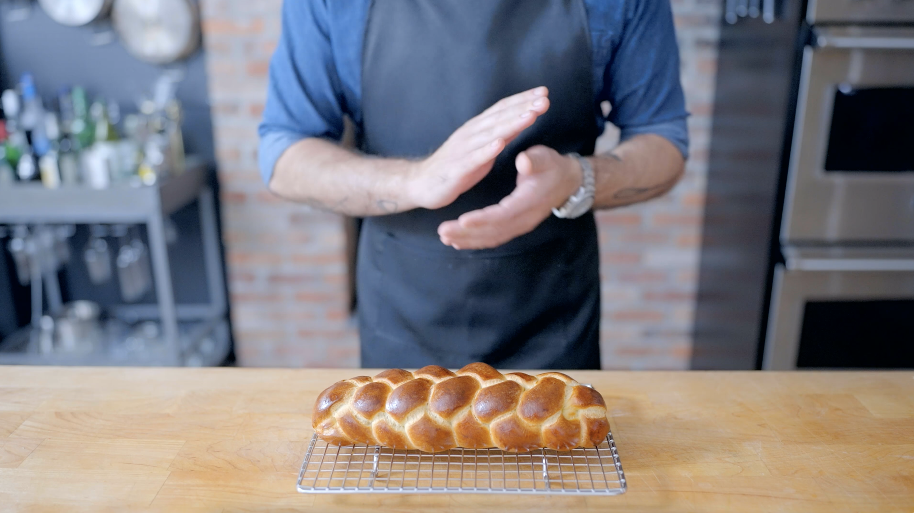

The Babish Challah Recipe

Must have challah
Honestly, Im not sure what a challah is, but it looks tasty! Impress all of your friends with this
beautifuly crafted artisnal bread. Your mother in law will never make a back handed comment again!
Ingredients
Challah Ingredients
- 500 g bread flower
- 7 g instant yeast
- 125 g water
- 80 g honey
- 2 large eggs
- 1 egg yolk
- 60 g vegetable oil + more for greasing
- 5 g tsp kosher salt
- Egg wash (recipe below)
Egg Wash ingredients
- 1 whole egg yolk
- 1 egg yolk
- 1 pinch kosher salt
Steps
Serves 4 to 6 people
- Combine the flour and yeast in the bowl of a stand mixer. Using the dough hook attachment, mix the ingredients until the yeast is well distributed.
- In a separate bowl, combine the remaining ingredients and whisk to combine thoroughly.
- Add the wet ingredients to the dry and begin mixing the dough together on a low speed, about 3-5 minutes.
- Once the dough has come together, increase the speed to medium-high and knead the dough until smooth and elastic, about 6-8 minutes.
- Remove the dough from the bowl and lightly grease the sides of the mixing bowl. Return the dough to the bowl and place a plate or clean dish towel over top. Proof the dough at room temperature for 45 minutes - 1 hour, or until puffed.
- Divide the dough into twelve 75 gram pieces to make 2 mini loaves, or divide the dough into six 148 gram pieces for one large loaf. Shape the dough pieces into roughly rectangular pieces, then starting from the outside edge, roll the dough toward you to form a log. Make sure to press out any excess air bubbles or pockets in the process.
- Roll the logs into 12-inch strands for mini loaves or 14-inch strands for a large loaf, then separate the braids into groups of six (if applicable). See video for braiding/shaping tips.
- Egg wash the braised loaves, then cover them with loose greased plastic wrap or place them into a proofing cabinet or combination steam oven set to the proofing setting. Allow the loaves to proof for 45 minutes - 1 ½ hours or until puffed and the dough only sprigs back halfway when gently poked.
- Meanwhile, preheat a conventional oven to 375°F with convection for the mini loaves, or 350°F with convection for one larger loaf. Alternatively, preheat a combination steam oven to 392 °F with 60% steam (rear heat).
- Egg wash the loaves once more before baking.
- Place the loaves into the oven. If using a traditional oven, bake for 18-20 minutes. If using a combination oven, bake for 10 minutes, then turn off the steam, open the door slightly to release the steam, and reduce the temperature to 360 °F. Continue to bake for an additional 10-12 minutes.
Egg Wash Prep
- Combine the egg, egg yolk, and salt in a small bowl. Whisk until the egg wash is homogenous.
- Refrigerate until ready to use.